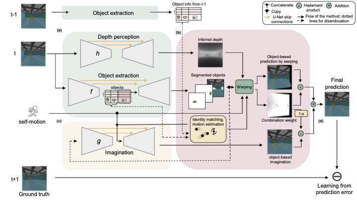
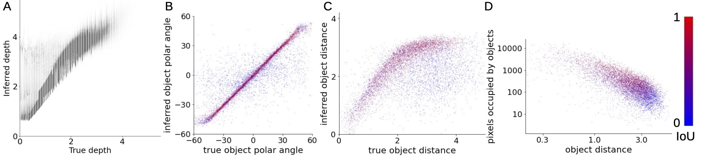

OPPLE network architecture.

True vs. inferred object polar angle and distance.
Example of segmentation output of Opple.

As part of human core knowledge, the representation of objects is the building block of mental representation that supports high-level concepts and symbolic reasoning. While humans develop the ability of perceiving objects situated in 3D environments without supervision, models that learn the same set of abilities with similar constraints faced by human infants are lacking. Towards this end, we developed a novel network architecture that simultaneously learns to 1) segment objects from discrete images, 2) infer their 3D locations, and 3) perceive depth, all while using only information directly available to the brain as training data, namely: sequences of images and self-motion. The core idea is treating objects as latent causes of visual input which the brain uses to make efficient predictions of future scenes. This results in object representations being learned as an essential byproduct of learning to predict.
BibTex Code Here